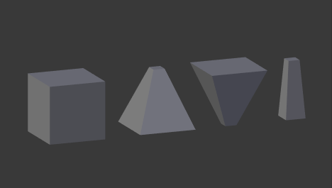

工作流程¶
相对形态键¶
在 物体模式下 ，通过 形态键 面板的
+按钮，添加一个新的形态键。"基型" 是重置形态。
Key 1，Key 2，等，是新添加的形态键。切换到 编辑模式 ，在 形态键 面板上选择 "Key 1" 。
根据需要变形网格（不要删除或添加顶点）。
选择
Key 2，网格将被变为重置形态。变换
Key 2，类似的，可以添加新的形态键。切换回 物体模式。
设置 "Key 1" ， "Key 2" 等的 值 ，观察形态键间的变化。
在下图中，从左到右依次显示物体模式下的形态键： "Basis" ， "Key 1" ， "Key 2" 和混合形态（ "Key 1" "1.0" ， "Key 2" "0.8" ）。

相对形态键示例。¶
有关更实用的示例见 如何组合形态键和驱动器。